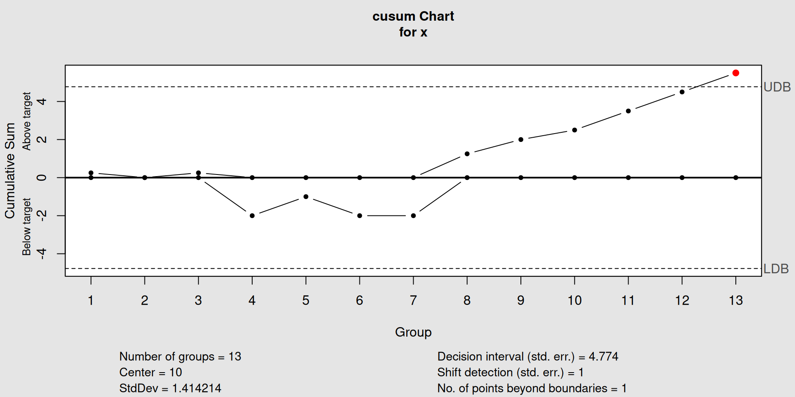
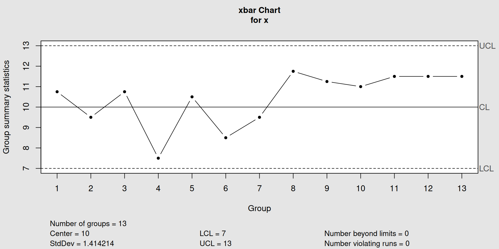
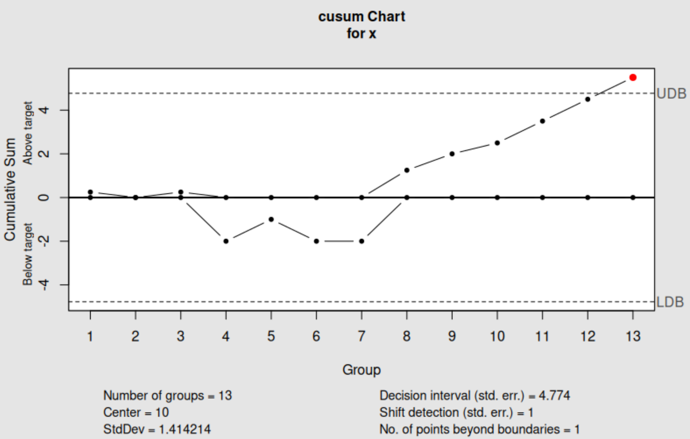
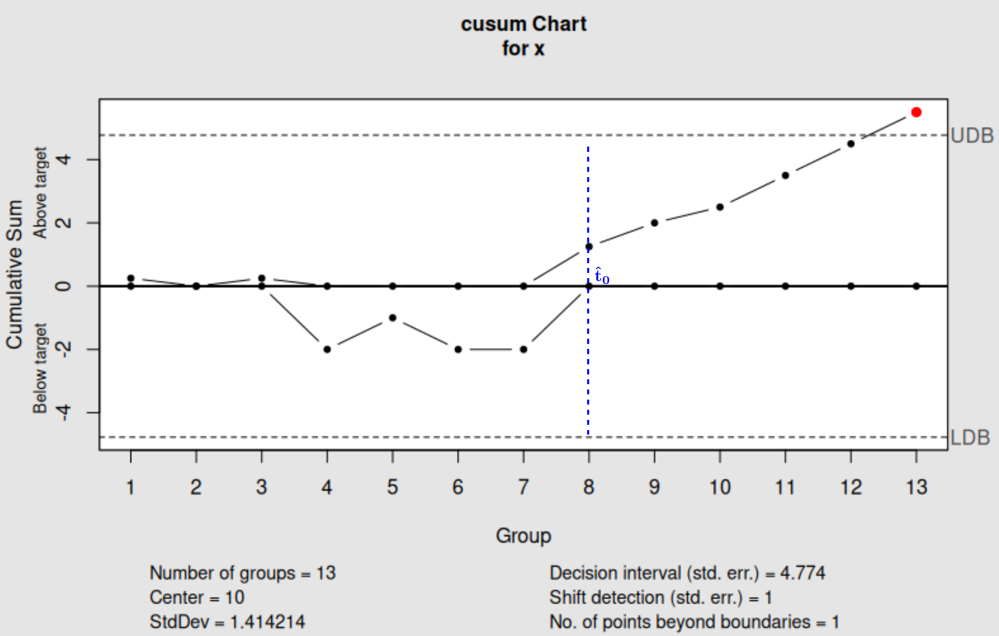
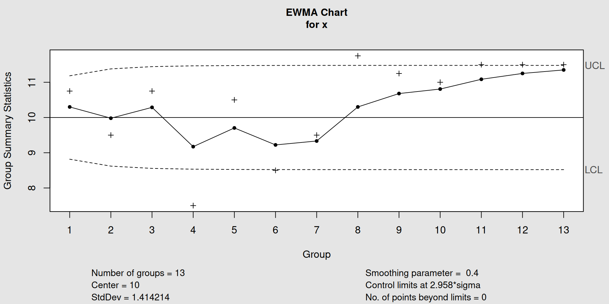

2.1.1 Définition :
Un graphique de contrôle ou carte de contrôle, improprement traduit de l’anglais control chart, est un outil utilisé dans le domaine du contrôle de la qualité afin de maîtriser un processus. Il permet de déterminer le moment où apparaît une cause particulière de variation d’une caractéristique, entraînant une altération du processus. Par exemple un processus de fabrication pourra être mis à l’arrêt avant de produire des pièces qui seront non-conformes (Source : http://wikipedia.fr .)
Dans la situation considérée ici
| i | \(x_{i,1}\) | \(x_{i,2}\) | \(\overline x_i\) | \(z_i\) | \(S_i^+\) | \(S_i^-\) | Test |
|---|---|---|---|---|---|---|---|
| 0 | 0.00 | 0 | |||||
| 1 | 10.5 | 11.0 | 10.75 | 0.75 | 0.25 | 0 | |
| 2 | 10.0 | 9.0 | 9.50 | -0.50 | 0.00 | 0 | |
| 3 | 11.5 | 10.0 | 10.75 | 0.75 | 0.25 | 0 | |
| 4 | 8.0 | 7.0 | 7.50 | -2.50 | 0.00 | -2 | |
| 5 | 9.5 | 11.5 | 10.50 | 0.50 | 0.00 | -1 | |
| 6 | 8.0 | 9.0 | 8.50 | -1.50 | 0.00 | -2 | |
| 7 | 9.0 | 10.0 | 9.50 | -0.50 | 0.00 | -2 | |
| 8 | 11.5 | 12.0 | 11.75 | 1.75 | 1.25 | 0 | |
| 9 | 10.5 | 12.0 | 11.25 | 1.25 | 2.00 | 0 | |
| 10 | 13.0 | 9.0 | 11.00 | 1.00 | 2.50 | 0 | |
| 11 | 12.0 | 11.0 | 11.50 | 1.50 | 3.50 | 0 | |
| 12 | 11.0 | 12.0 | 11.50 | 1.50 | 4.50 | 0 | |
| 13 | 12.0 | 11.0 | 11.50 | 1.50 | 5.50 | 0 |
library(qcc)
x <- c(
10.75,9.5,10.75,7.5,10.5,
8.5,9.5,11.75,11.25,11,
11.5,11.5,11.5)
CUSUM <- cusum(
# x = données
data = x,
# sizes = taille échantillon
sizes = 2,
# center = mu_0
center = 10,
# std.dev = sigma
std.dev = sqrt(2),
# decision.interval = h
decision.interval = 4.774,
# se.shift = 2*k
se.shift = 1
)

library(spc)
## Shewhart : POM_0 = espérance d'une loi géométrique G(alpha)
alpha <- 2.7 / 1000
1 / alpha[1] 370.3704[1] 1108 h
4.773834 [1] 370.0625 q
358 ## Nombre moyen d'essais pour détecter
### un décalage de l'ordre de sigma
xcusum.arl(k = 0.5, h = 4.774, mu = 1, sided = "two")[1] 9.925022 k h
0.500785 4.767640
Décalage
|
Shewhart
|
CUSUM k=0,5 h=4,774
|
CUSUM k=1 h=2,517
|
|||
|---|---|---|---|---|---|---|
| \(\delta\) | POM | POMAX | POM | POMAX | POM | POMAX |
| 0.00 | 370.40 | 1108.12 | 370.06 | 2205 | 370.56 | 2216 |
| 0.25 | 281.15 | 840.76 | 121.61 | 358 | 196.80 | 629 |
| 0.50 | 155.22 | 463.51 | 35.26 | 93 | 69.07 | 203 |
| 0.75 | 81.22 | 241.80 | 16.19 | 37 | 27.61 | 78 |
| 1.00 | 43.89 | 129.99 | 9.93 | 20 | 13.56 | 36 |
| 1.50 | 14.97 | 43.32 | 5.52 | 10 | 5.46 | 12 |
| 2.00 | 6.30 | 17.34 | 3.86 | 6 | 3.26 | 6 |
| 2.50 | 3.24 | 8.12 | 3.00 | 4 | 2.35 | 4 |
| 3.00 | 2.00 | 4.32 | 2.49 | 4 | 1.86 | 3 |
| 4.00 | 1.19 | 1.63 | 1.96 | 3 | 1.32 | 2 |
| 5.00 | 1.02 | 0.79 | 1.61 | 2 | 1.07 | 2 |
on préféra donc la carte CUSUM à celle de Shewhart pour la détection de petits décalages
et la carte de Shewhart à la carte CUSUM pour la détection de décalages importants
pour la carte de CUSUM, le choix des paramètres se fera en fonction de
une fois ces deux valeurs choisies, on prendra \(k=\tfrac{\delta}{2}\) (admis) et on déterminera \(h\) en tenant compte de la valeur de \({POM_0}\)
exemple, pour détecter un écart \(\delta = 1\), avec \({POM_0}=370\)
| Déréglage | Nb contrôles | Choix de n | Choix k et h |
|---|---|---|---|
| petit \(\approx \sigma\) | 10 | n tq \(\delta = 1\) | k = 0,5 h = 4.77 |
| moyen | 3 | n tq \(\delta = 2\) | k = 1 h = 2.52 |
| important | au plus 2 | n tq \(\delta = 3\) | k = 1,5 h = 1.6 |
| très important | dès le premier | NA | carte de Shewhart |
| Décalage \(\delta\) | CUSUM k=0,5 h=5 \(S_0^+=S_0^-=0\) | CUSUM k=0,5 h=5 \(S_0^+=-S_0^-=1\) | CUSUM k=0,5 h=5 \(S_0^+=-S_0^-=2,5\) |
|---|---|---|---|
| 0.0 | 465.44 | 461.18 | 430.39 |
| 0.5 | 38.00 | 35.74 | 28.67 |
| 1.0 | 10.38 | 9.03 | 6.35 |
| 2.0 | 4.01 | 3.36 | 2.36 |
| 3.0 | 2.57 | 2.20 | 1.54 |
| 5.0 | 1.69 | 1.31 | 1.02 |
Décalage
|
Cartes seules
|
Cartes combinées
|
|||
|---|---|---|---|---|---|
\(\delta\)
|
Shewhart
|
CUSUM
|
k=0,5 h=5
|
||
| L=3 | k=0,5 h=5 | L=3 | L=3,5 | L=4 | |
| 0.0 | 370.40 | 465.44 | 223.00 | 391.00 | 459.00 |
| 0.5 | 155.22 | 38.00 | 34.00 | 37.00 | 38.00 |
| 1.0 | 43.89 | 10.38 | 9.80 | 10.20 | 10.40 |
| 2.0 | 6.30 | 4.01 | 3.50 | 3.80 | 5.00 |
| 3.0 | 2.00 | 2.57 | 1.80 | 2.10 | 2.40 |
| 5.0 | 1.02 | 1.69 | 1.02 | 1.07 | 1.16 |



trois paramètres à définir : \(\lambda, L\) et \(n\)
en pratique, on pourra se référer à ces choix
| Déréglage | Nb contrôles | Choix de n | Choix L et \(\lambda\) |
|---|---|---|---|
| petit \(\approx \sigma\) | 10 | n tq \(\delta = 1\) | L = 2,8 \(\,\lambda = 0.15\) |
| moyen | 3 | n tq \(\delta = 2\) | L = 2,96 \(\,\lambda = 0.4\) |
| important | au plus 2 | n tq \(\delta = 3\) | L = 3 \(\,\lambda = 0.7\) |
| très important | dès le premier | NA | carte de Shewhart |
Décalage
|
Shewhart
|
EWMA \(\lambda\)=0,5 L=2,978
|
EWMA \(\delta\)=0,4 L=2,958
|
EWMA \(\delta\)=0,25 L=2,898
|
||||
|---|---|---|---|---|---|---|---|---|
| \(\delta\) | POM | POMAX | POM | POMAX | POM | POMAX | POM | POMAX |
| 0.00 | 370.4 | 1108.1 | 370.6 | 1107 | 369.3 | 1102 | 370.4 | 1103 |
| 0.25 | 281.2 | 840.8 | 196.2 | 584 | 173.5 | 515 | 135.5 | 397 |
| 0.50 | 155.2 | 463.5 | 71.7 | 210 | 58.3 | 169 | 41.1 | 114 |
| 0.75 | 81.2 | 241.8 | 30.2 | 86 | 24.4 | 67 | 18.0 | 46 |
| 1.00 | 43.9 | 130.0 | 15.2 | 41 | 12.7 | 33 | 10.2 | 24 |
| 1.50 | 15.0 | 43.3 | 6.0 | 14 | 5.5 | 12 | 5.2 | 10 |
| 2.00 | 6.3 | 17.3 | 3.4 | 7 | 3.3 | 6 | 3.5 | 6 |
| 2.50 | 3.2 | 8.1 | 2.4 | 4 | 2.4 | 4 | 2.6 | 4 |
| 3.00 | 2.0 | 4.3 | 1.9 | 3 | 1.9 | 3 | 2.2 | 3 |
| 4.00 | 1.2 | 1.6 | 1.3 | 2 | 1.4 | 2 | 1.7 | 2 |
| 5.00 | 1.0 | 0.8 | 1.1 | 2 | 1.1 | 2 | 1.3 | 2 |
# exemple pour mu = 1, lambda = 0,5 et L = 2,978
## POM pour
xewma.arl(l = 0.5,cE=2.978,mu=1, sided = "two")[1] 15.24653 q
41
4.2 Comment évaluer/comparer deux cartes ?